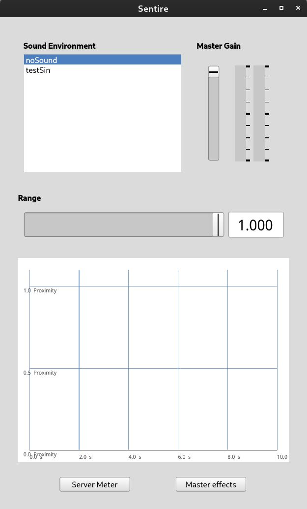

Learn how to install the the sentire software, set up a minimal sensor configuration and use a pre-defined sound environment for sonic interaction
Disclaimer: feel free to use these instructions and the sentire le software for your research, art project or just for fun. If you do so, please cite the following paper in every publication (print or digital) that references your work:
Staudt, P., Kogge, A., Lussana, M., Rizzonelli, M., Stahl, B., & Kim, J. H. (2022). A New Sensor Technology for the Sonification Of Proximity and Touch in Closed-Loop Auditory Interaction. Proceedings of the 19th Sound and Music Computing Conference, 441–448. https://doi.org/10.5281/zenodo.6573488
PublicationOnce you have successfully installed SuperCollider, you can either
clone the sentire repository or download the latest release and
unzip it on your computer:
git clone https://github.com/audiophil-dev/sentire_le.git
$yourSentireDirectory with your local (just
downloaded) sentire directory
SentireExtensions from
$yourSentireDirectory to the SuperCollider extensions folder:
~/Library/Application\ Support/SuperCollider/Extensions
~/.local/share/SuperCollider/Extensions
Use the shortcuts or in the SuperCollider IDE: Language->Recompile Class Library
Cmd+Shift+L
Ctrl+Shift+L
Quarks.gui();
Open main.scd in
$yourSentireDirectory and execute the whole code inside the brackets.
A Window named "Sentire" should open, and no errors should be printed to the post window

Sentire LE is open source and published under the GPL-3.0 license. If you want to reuse or modify please respect the GPL-3.0 licensing. If you want to contribute to the public code repository check out the README on github.
We use thin instrument cables with a TRS connector on the one side and a conductive wristband (ESD Wristband) fixed to the other side.
Take an old instrument cable with Jack connectors (TRS). Optionally cut one end. You can attach anything that conducts to the "hot" wire of the cable.
Connect one cable to the first mic input (channel 1) of your audio interface, the other to the first line output (channel 1). Connect your speaker or sound system to line out channels 3 and 4.
Once you have successfully installed sentire LE and you have setup the hardware (see sections aboce), you are ready to try the interactive proximity sensing.
We call the set of parameters that defines the sonic quality of the interaction a sound environment (SE) [1]. A SE results from predefined artistic decisions concerning sound design and algorithmic composition combined with a specific parameter mapping.
Sentire LE comes with two pre-defined SEs: testSin and softSin
A SE based on a series of harmonic sine frequencies. The composition of the different fundamental frequencies is mapped to proximity. Touch events trigger change the root frequency. Although this SE still sounds unpleasent to many persons, it is a very good example demonstrating the felt agency when using sentire.
If you want to change the current sound environment, just click on the name of the SE you want to select. If you want to disable the sound, select noSound
If you want to program your own SE or modify an existing SE, read section Sonic Interaction Design with Sentire
[1] M. Rizzonelli, J. H. Kim, P. Staudt, and M. Lussana, Fostering Social Interaction through Sound Feedback: Sentire, Organised Sound, vol. 28, no. 01, pp. 317-326, 2022. https://doi.org/10.1017/S1355771822000024Link
You can adjust the volume of the SE with the Master Slider on the right. The meter next to the slider shows the output level. If you want to adjust the Audio Effects on the master output channel, click Master Effects. A new window will open, with settings for the pre-defined master-effects.
Using the Range Slider, will change the maximum range of the proximity sensing. The physical range of the sensor system depends on various factors and is mapped to a normalised range between 0 and 1. Setting the range slider to 1 will give you the maximum available range. With a normal consumer grade sound card you can reach a maximum range of about 4 metres. If the maximum range is to small, try increasing the pre-amplification of the input channel. Make sure that the input does not clip. If you experience undefined behavior in the far range, turn down the pre-amplification a bit.
If you have selected a sound environment before, click noSound to test the sensor input before you start the interaction. Each interaction participant wears one fo the bracelets (if you use the official sentire wires) or touch the end of you DIY sensor cables. You should see a changing signal in the proximity now. You can adjust the range before starting the interaction. The pre-defined sentire sound environments start with silence at the maximum distance. This is the point just before the proximity graph starts showing a signal.